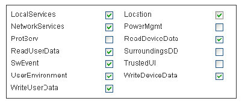

How to sign the Redpin Sniffer for Symbian
- Click here to go to the open signing online process page from the www.symbiansigned.com.
Fill the form with the IMEI of your phone, your email, choose the file RedpinSniffer.sis to upload and check the boxes of the following capabilities:

After a confirmation you will get per email the link to your signed .sis file
note about UID3
The actual UID3 of the RedpinSniffer application is 0xE7337461, in the very rare case that your phone has another application installed with the same UID number, you must to replace all UID3 ocurrencies in the whole project code with a new one from the development range or with your own UID (if you own a publisher ID) and then re-compile.